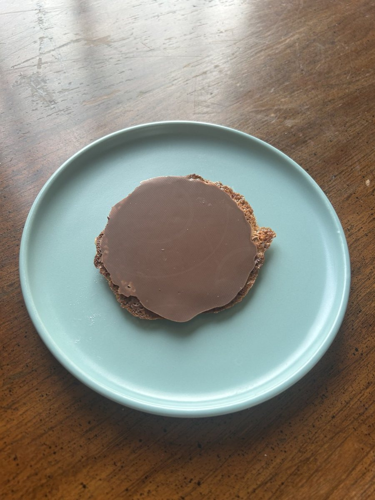

Baking / Other cookies
Moscovitas

- Yield
- 30-35 cookies
- Unit Weight
- 40 g
- Oven
- 180C / 356F, about 10 min
- Price
- $3
- Tags
- vegetarian
- Source
- El Ingeniero Cocinero, Rialto style
Scorecard
5/5Appearance
5/5Texture
5/5Flavor
tediousTechnique
5/5Overall
Ingredients
Batch
- Almonds, toasted: 100 g
- Heavy cream, 38% fat: 100 g
- Powdered sugar: 100 g
- All-purpose flour: 20 g
- Chocolate, for coating: 150 g
Method
- Crush the almonds but stop short of powder. Some texture is the point.
- Warm the cream with the powdered sugar over medium heat until completely smooth.
- Stir in the crushed almonds and sifted flour, then take it off the heat.
- The mix should be loose but with body. Spoon roughly a teaspoon per cookie onto parchment.
- Space them well apart. They spread a lot.
- Bake at 180C for about 10 minutes, top and bottom heat.
- Cool completely on the tray before touching them.
- Melt the chocolate gently, then coat the flat underside of each cooled cookie.
- Let the chocolate set before serving.
Notes
- Only 20 g of flour against 100 g each of almonds, cream and sugar, which is why these come out as a thin lace cookie rather than anything cakey.
- Cream needs 35% fat minimum. 38% is better.
- Toasting the almonds is what makes them crunchy. Two or three minutes longer in the oven gets them crisper still.
- Walnuts or hazelnuts work instead of almonds.
- The chocolate goes on the base only, not the top.
- The bakery-site entry for this had a completely different formula, with hazelnut, cocoa, butter and eggs. That was not this recipe. These quantities are the real one.
Preserving
Keeps well airtight in a dry place. Humidity is the enemy, since it softens the lace and dulls the snap.
- Let the chocolate set fully before stacking, or the coating marks.
- Do not refrigerate. Condensation ruins the texture.
Learnings
Top of the whole collection at 5 overall, straight 5s on appearance, texture and flavor, ahead of Milk Powder butter cookies at 4.75. The catch is the technique, which is tedious: spooning 30 to 35 individual portions, then hand-coating every base with chocolate once cooled. Worth it, but not a weeknight bake.